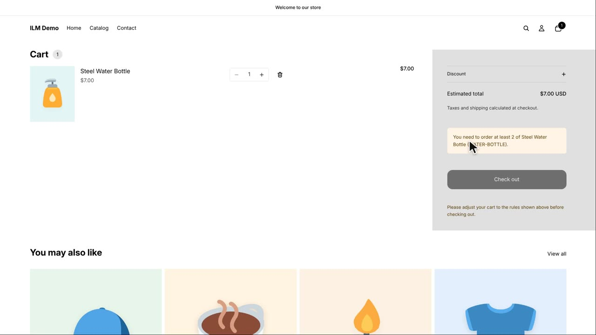
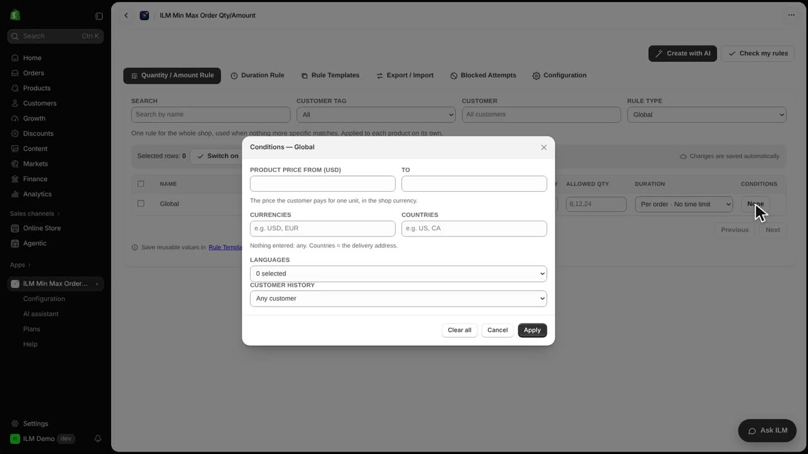
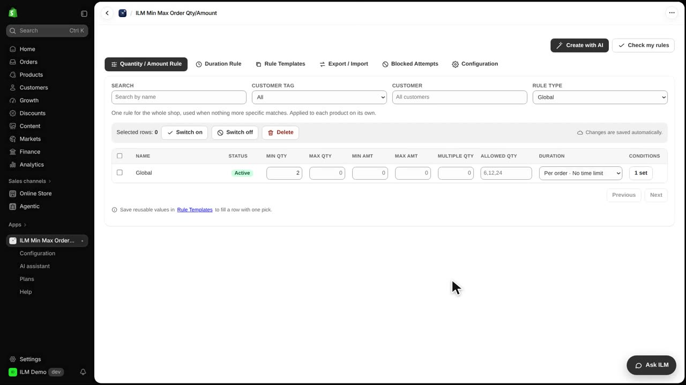
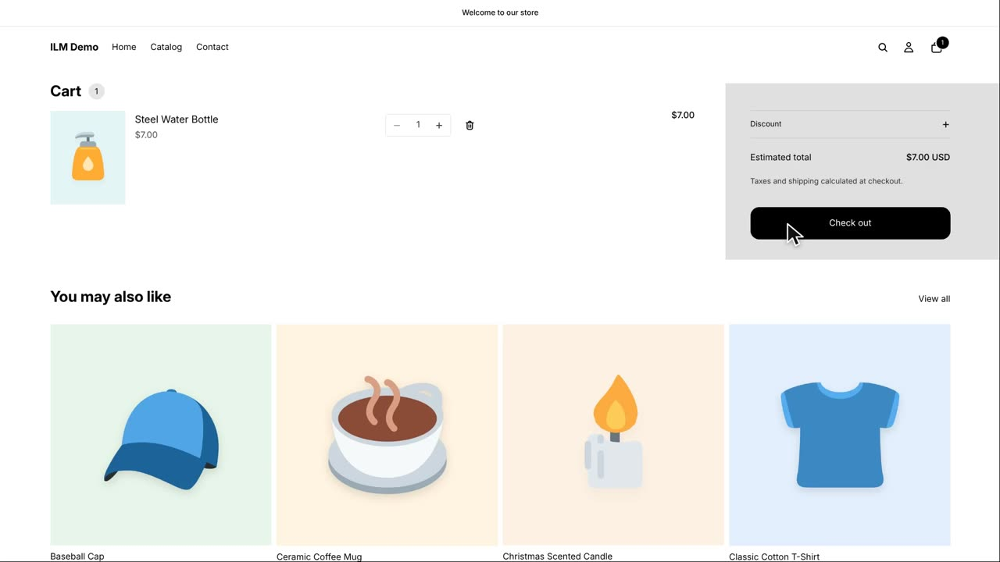
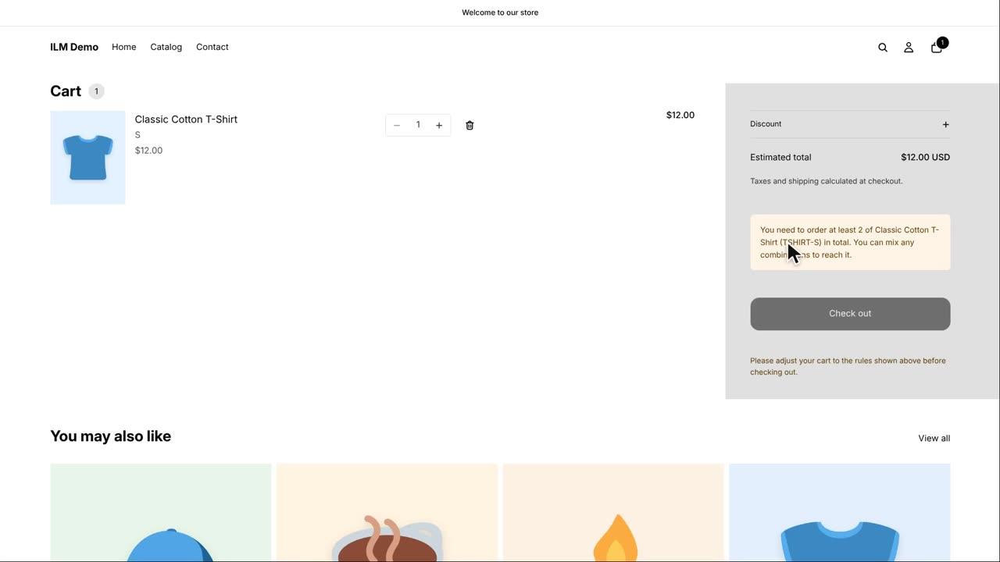

Conditions let a rule apply only to some shoppers, products or situations, instead of everyone. Our global rule asks for at least two of every product, which is great for wholesale-style minimums but too strict for cheap items. Today we add a condition so the rule only applies to products that cost ten or more. Watch how the Steel Water Bottle at seven dollars becomes free to buy alone, while the Classic Cotton T-Shirt at twelve dollars still needs two.
First we open the storefront cart with one Steel Water Bottle in it. Because the global rule has no condition yet, it applies to every product, so the cart shows a notice refusing a single bottle.

Back in the app, we set the rule type to Global and open the Conditions panel for that rule.

In the Conditions panel we type ten into Product price from. The same panel also lets you limit the rule to certain currencies, delivery countries, languages, or new versus returning customers, and then we click Apply.

Now we return to the cart with the Steel Water Bottle. Since it costs seven, below the ten dollar threshold, the rule no longer applies and one bottle is allowed.

Next we add one Classic Cotton T-Shirt, which costs twelve. That is above the threshold, so the global minimum of two still applies and the cart shows the refusal notice again.
